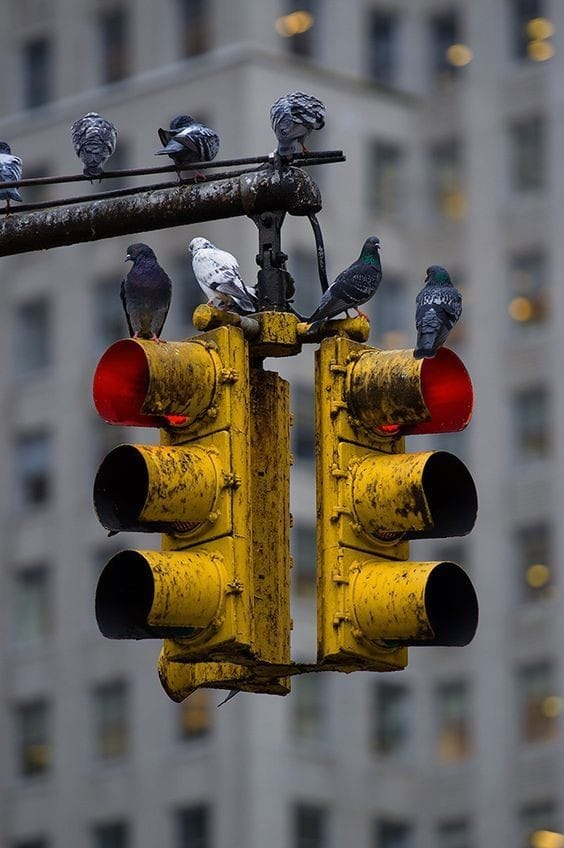

Colégio Estadual do Paraná - 2º K
Sobre o site sobre o site bbbbbSemáfaro:
O semáforo é um dispositivo de sinalização que regula o tráfego de veículos e pedestres nas ruas e estradas. Aqui estão algumas coisas interessantes sobre o semáforo:

- O primeiro semáforo foi instalado em Londres, Inglaterra, em 1868. Ele era controlado manualmente por um policial.
- O primeiro semáforo elétrico foi instalado em Cleveland, Ohio, Estados Unidos, em 1914. Ele tinha duas cores, vermelho e verde.
- Os semáforos modernos geralmente têm três cores: vermelho, amarelo e verde. O vermelho significa "pare", o amarelo significa "atenção" e o verde significa "siga em frente".
- Os semáforos são controlados por um computador centralizado que sincroniza as luzes em toda a cidade para garantir que o tráfego flua de maneira eficiente.
- Alguns semáforos são equipados com câmeras que podem detectar a presença de veículos e pedestres. Isso permite que o computador centralizado ajuste o tempo das luzes para acomodar o tráfego em tempo real.
- A cor vermelha é usada em semáforos porque é a cor mais fácil de ser vista à distância, mesmo em condições de pouca luz.
- Em alguns países, como o Japão, os semáforos emitem um som quando a luz verde acende para alertar os pedestres cegos ou com deficiência visual.
- Em certas situações, como em uma emergência médica, a polícia ou os bombeiros podem controlar manualmente um semáforo para permitir que o tráfego flua mais rapidamente.
Trabalho feito por:
Alanis Nº1
Sou estudante do Colégio Estadual do Paraná, fiz a inscrição para handbol.
Leticia Nº 26
Sou estudante do Colégio Estadual do Paraná, jogo vôlei pelo colégio.
 Manuella Nº 27
Manuella Nº 27
Sou estudante do Colégio Estadual do Paraná, jogo vôlei pelo colégio.